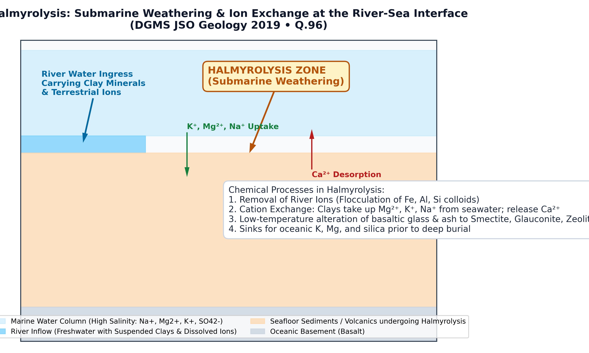

Q.96: Halmyrolysis refers to a process where
The term halmyrolysis (derived from Greek halme = sea salt / brine, and lysis = dissolution / decomposition) was coined by Hummel (1922) to denote submarine weathering. It encompasses the collective geochemical and mineralogical alterations that affect sediments, clay minerals, and volcanic materials on the seafloor as a result of their direct interaction with seawater prior to deep burial and diagenesis.
A critical aspect of halmyrolysis occurs at the estuary-marine interface. When terrestrial freshwater discharged by rivers enters the high-ionic-strength marine environment:

| Option | Stated Process | Geochemical Domain | Evaluation & Physical Mechanism |
|---|---|---|---|
| (a) | Addition of La takes place in magma during crustal contamination | Igneous Petrology / Geochemistry | Incorrect. This is crustal assimilation (AFC process), where incompatible light rare earth elements (LREE like Lanthanum) are enriched in ascending magmas by assimilating continental crust. |
| (b) | Removal of Mg from magma takes place during crystal fractionation | Igneous Petrology | Incorrect. This describes fractional crystallization of magnesium-rich ferromagnesian phases (olivine, clinopyroxene) during Bowen's reaction series. |
| (c) | Removal of some ions of river water takes place when the river enters the sea | Sedimentary Geochemistry / Marine Geology | Correct. By definition, halmyrolysis involves the chemical interaction between river-borne sediments/ions and seawater, leading to cation exchange, colloidal flocculation, and the removal of dissolved ions from water. |
| (d) | Removal of Eu takes place during magmatic crystallization | Igneous Trace Element Geochemistry | Incorrect. This describes the formation of a negative europium anomaly (δEu < 1) due to preferential partitioning of divalent Eu2+ into fractionating plagioclase feldspar. |
While subaerial weathering is driven by meteoric water, carbonic acid, and atmospheric oxygen, halmyrolysis is submarine chemical weathering driven by saline ocean water. It acts as a primary geochemical sink for alkali and alkaline earth cations (especially K+ and Mg2+) and regulates the chemical composition of the oceans.